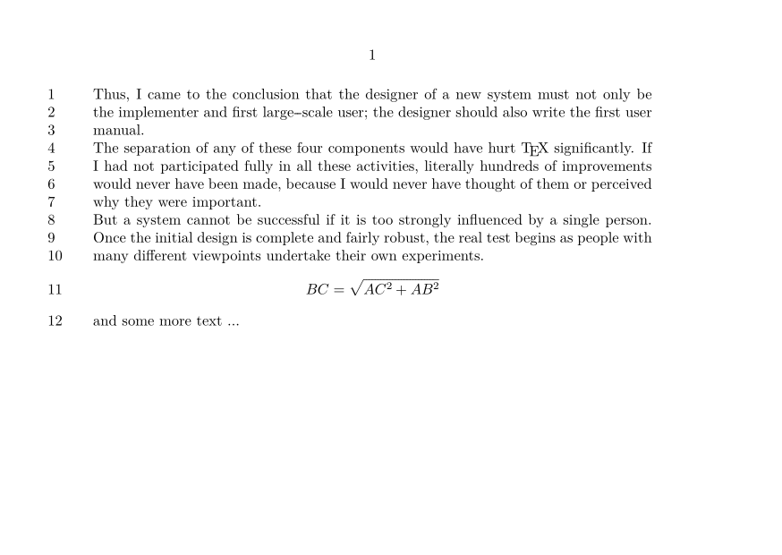

Contents
Summary
The environment
\startlinenumbering ... \stoplinenumbering
is used for numbering lines of text
Settings
| \startlinenumbering[...][...=...,...] ... \stoplinenumbering | |
| [...] | name |
| continue | yes no |
| start | number |
| step | number |
| method | page first next |
Settings argument
Description
This environment numbers lines in the margin of the layout.
Examples
Example 1
-
\setuppapersize[A6,landscape] \starttext \startlinenumbering \input knuth \startformula BC = \sqrt{AC^2 + AB^2} \stopformula and some more text \dots \stoplinenumbering \stoptext
- 